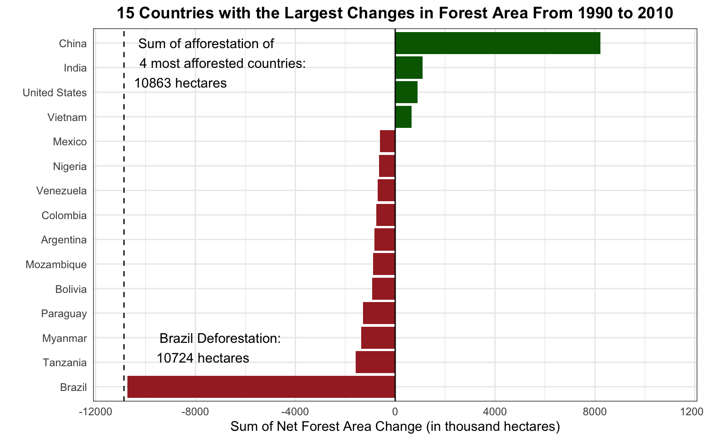
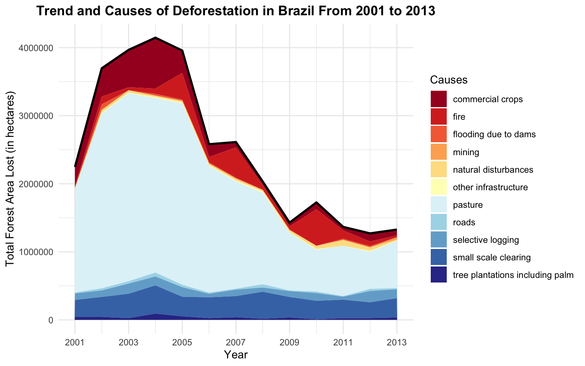
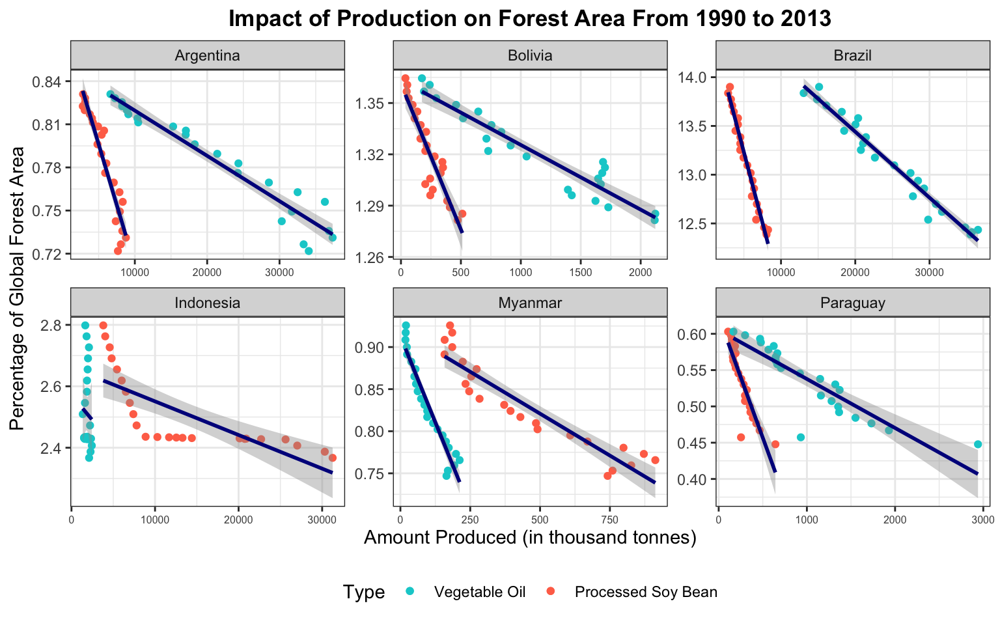

Analysis on Key Drivers of Deforestation
Introduction
Deforestation remains a critical global challenge, with a net forest conversion of -5,150,000 hectares annually. In this study, we aim to dissect the extent and drivers of this phenomenon, focusing on the following question:
** What are the primary factors contributing to the recent trend of deforestation in the world’s most deforested countries? **
Starting from identifying the world’s most deforested countries, we examine the trends and primary causes of deforestation within Brazil which ranks first in deforestation, to extrapolate insights applicable to other severely deforested countries.
Role & Contributions
- Data cleaning, data preprocessing, and exploratory analysis using dplyr.
- Developed multiple interactive visualizations (scatter plots, area maps) using ggplot2.
- Authored analytical summaries and insights based on visualizations.
Visualizations



Please have a look at the details of the project.
View Markdown File